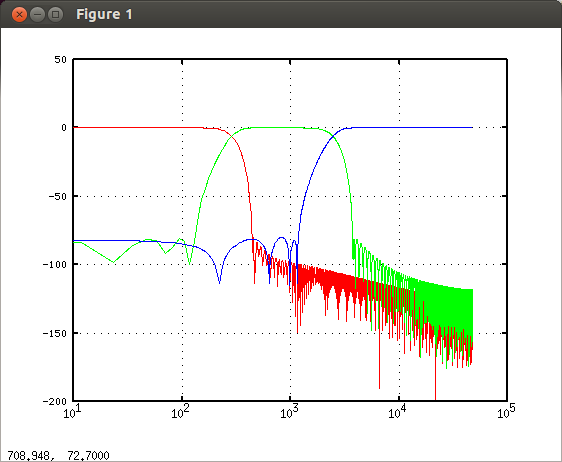
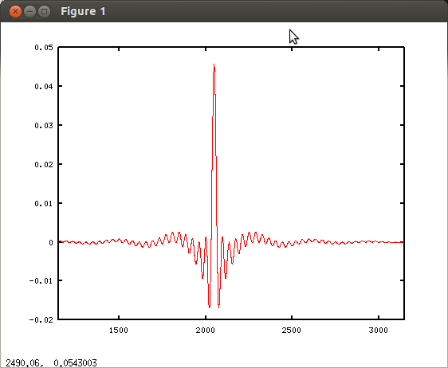
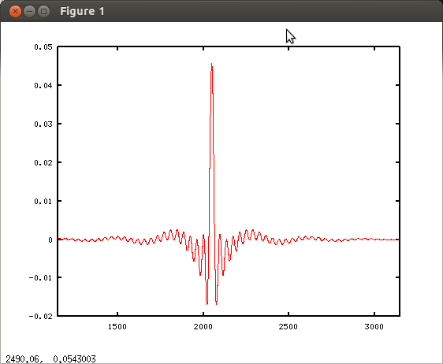

A16 プリエコー2
室長：firフィルタで位相を保ったままプリエコーなくすことは無理だ。したがってプリエコーをなくすためにバターワースなどのＩＩＲフィルタを使うという判断も当然アリだ。ワシは位相を保つことが何より重要と考えているわけではないのでIIRでも別に構わんと思っとる。だが当研究室ではＦＩＲフィルタで細かな補正までしていく方針だ。良い音を目指すのに方法は１つではないのだ。
さて、firで位相を保つためにはプリエコーが避けられないが、その量（プリエコーの時間）を減らすことは出来る。
助手：tap数（フィルタの次数+1）を減らすのですね。
室長：そのとおり。フィルタの中心にインパルスがくるとするとプリエコーはタップ数の1/2までしかありえない。tap数を減らせばプリエコーの時間も減るわけじゃ。
助手：しかしtap数を減らすと低域の精度が出ません。
室長：低域と高域でtap数を変えて設計すれば良い。
助手：でもbrutefirではどの係数も同じ長さになりますよ。
室長：前後にゼロをつめて短い方を長い係数に合わせれば良いのじゃ。
助手：なるほど。ではバンドパスフィルタで低域と高域のtap数を変えたいときはどうしますか。
室長：fftconv関数で二つのフィルタを畳み込めばよいのじゃ。早速やってみてくれ。とりあえずtap数は遮断周波数の波長の5倍でやってみてくれ。
助手：分かりました。では前回と同じサンプリング周波数96kでクロス300Hz・2.5kHzの3way用のフィルタを作ってみます。
fs=96000;
f1= 300;
f2=2500;
t1=floor(fs/f1*5);
t2=floor(fs/f2*5);
t1=t1+mod(t1,2);
t2=t2+mod(t2,2);
low=fir1(t1,f1/fs*2,'low',kaiser(t1+1,8));
m1=fir1(t1,f1/fs*2,'high',kaiser(t1+1,8));
m2=fir1(t2,f2/fs*2,'low',kaiser(t2+1,8));
high=fir1(t2,f2/fs*2,'high',kaiser(t2+1,8));
mid=fftconv(m1,m2);
clf;
hold on;
filterplot(low,fs,'1');
filterplot(mid,fs,'2');
filterplot(high,fs,'3');

 midの波形です。ちなみに以前に作ったフィルタのmidはこんな感じです。

midの波形です。ちなみに以前に作ったフィルタのmidはこんな感じです。

遮断特性が緩やかになった代わりにプリエコーがかなり減ってます。
室長：後は前後にゼロを付けて3つのフィルタの長さを2の乗数に揃えれば出来上がりじゃ。
2012年12月20日